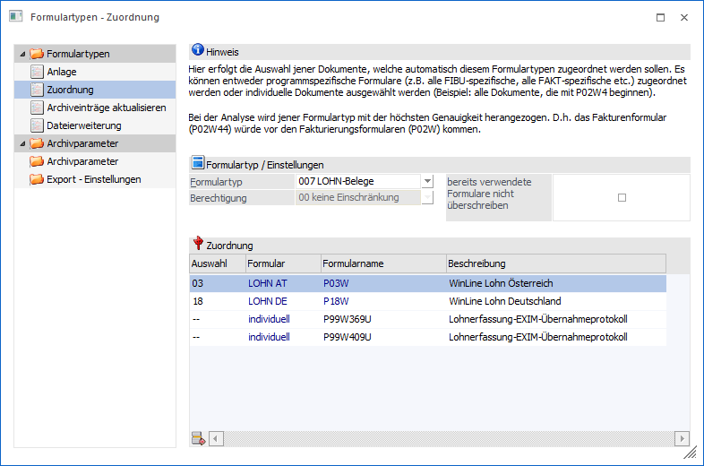
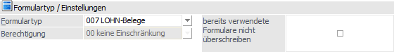
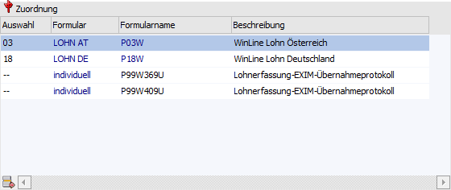

Damit Drucke aus der WinLine (interne Dokumente) automatisch mit einem Formulartyp im Archiv abgelegt werden, muss eine Verbindung geschaffen werden. Dieses findet über die Menüpunkt…
1 WinLine ADMIN
1 Archiv
1 Formulartypen
1 Bereich "Formulartypen - Zuordnung"
… statt.
Hinweis
Über diesen Weg kann somit auch eine automatische Berechtigungsvergabe erfolgen, da in Formulartypen Berechtigungsprofile hinterlegt werden können, die an den Archiveintrag weitergereicht werden.

Es können folgende Felder bearbeitet werden:
Formulartyp / Einstellungen

Ø Formulartyp
Aus der Auswahlliste kann der Formulartyp gewählt werden, für welchen Zuordnungen definiert werden sollen.
Ø Berechtigungen
Unter dem Formulartyp wird die im Formulartyp hinterlegte Berechtigung angezeigt.
Ø bereits verwendete Formulare nicht überschreiben
Wird diese Checkbox aktiviert, dann wird verhindert, das bereits vorhandene Zuordnungen überschrieben werden.
Tabelle "Zuordnung

In der Tabelle können die einzelnen Formulare definiert werden, die für diesen Formulartyp gültig sein sollen. Dabei gibt es in der Spalte "Auswahl" folgende Möglichkeiten:
|
Nr. |
Formular |
Beschreibung |
|
-- |
individuell |
Mit dieser Option kann ein einzelnes Formular hinterlegt werden, wobei im Feld Formularname mit der Matchcodefunktion nach allen Formularen gesucht werden kann. |
|
00 |
WinLine START |
Als Formularname wird P00W vorgeschlagen |
|
01 |
WinLine FIBU |
Als Formularname wird P01W vorgeschlagen |
|
02 |
WinLine FAKT |
Als Formularname wird P02W vorgeschlagen |
|
03 |
WinLine LOHN Österreich |
Als Formularname wird P03W vorgeschlagen |
|
04 |
WinLine LIST |
Als Formularname wird P04W vorgeschlagen |
|
05 |
WinLine KORE |
Als Formularname wird P05W vorgeschlagen |
|
06 |
WinLine ANBU |
Als Formularname wird P06W vorgeschlagen |
|
08 |
WinLine ADMIN |
Als Formularname wird P08W vorgeschlagen |
|
11 |
WinLine INFO |
Als Formularname wird P11W vorgeschlagen |
|
18 |
WinLine LOHN Deutschland |
Als Formularname wird P18W vorgeschlagen |
|
20 |
WinLine PPS |
Als Formularname wird P20W vorgeschlagen |
|
21 |
Saldenliste |
Als Formularname wird P01W51 vorgeschlagen |
|
22 |
Buchungsjournal |
Als Formularname wird P01W52 vorgeschlagen |
|
23 |
Kontoblatt |
Als Formularname wird P01W53 vorgeschlagen |
|
24 |
Bilanz |
Als Formularname wird P01W68 vorgeschlagen |
|
25 |
Mahnung |
Als Formularname wird P01WWM vorgeschlagen |
|
26 |
Angebot Verkauf |
Als Formularname wird P02W41 vorgeschlagen |
|
27 |
Auftragsbestätigung Verkauf |
Als Formularname wird P02W42 vorgeschlagen |
|
28 |
Lieferschein Verkauf |
Als Formularname wird P02W43 vorgeschlagen |
|
29 |
Faktura Verkauf |
Als Formularname wird P02W44 vorgeschlagen |
|
30 |
Anfrage Einkauf |
Als Formularname wird P02W51 vorgeschlagen |
|
31 |
Bestellung Einkauf |
Als Formularname wird P02W52 vorgeschlagen |
|
32 |
Lieferschein Einkauf |
Als Formularname wird P02W53 vorgeschlagen |
|
33 |
Faktura Einkauf |
Als Formularname wird P02W54 vorgeschlagen |
|
98 |
externe Dokumente |
Als Formularname wird (AUTO) vorgeschlagen |
|
99 |
Globale Formulare |
Als Formularname wird P99W vorgeschlagen |
Pro Formulartyp können mehrere Einträge hinterlegt werden, wobei immer die detaillierteste den Vorrang hat.
Beispiel
Es wurde ein Ausdruck des Formulars P02W44 archiviert.
Beim Formulartyp "Beleg" wurde der Typ "02 - WinLine FAKT" mit dem Formular P02W hinterlegt.
Beim Formulartyp "Rechnung" wurde der Typ "29 - Faktura Verkauf" mit dem Formular P02W44 hinterlegt.
In diesem Fall wird beim Formular der Formulartyp "Rechnung" zur Anwendung kommen.
Buttons
Ø Ok
Durch Drücken des Buttons "OK" oder der Taste F5 werden die vorgenommenen Einstellungen gespeichert.
Ø Ende
Mit dem Button "Ende" wird der Bildschirm verlassen, ohne das Eingaben abgespeichert werden.
Ø alle bestehenden Formularzuordnungen löschen
Damit durchgeführte Änderungen auch auf alle bereits vorhandene Formulare übernommen werden können, können durch Anklicken des Buttons "alle bestehenden Formularzuordnungen löschen" alle Berechtigungseinstellungen zurückgesetzt werden.